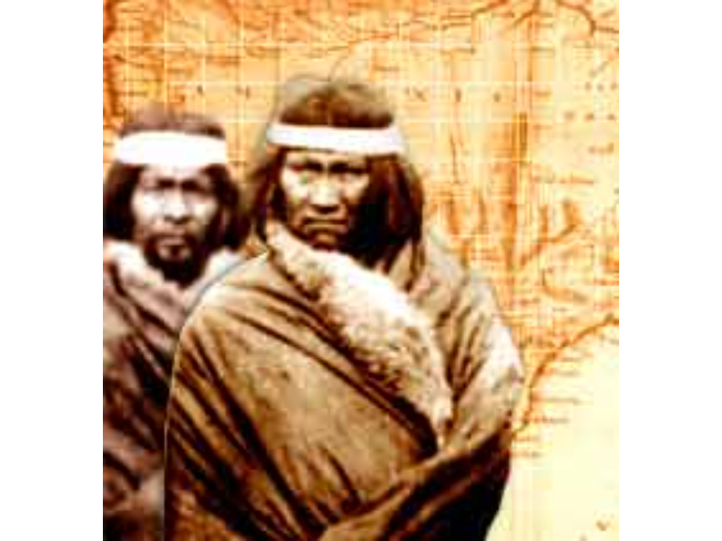
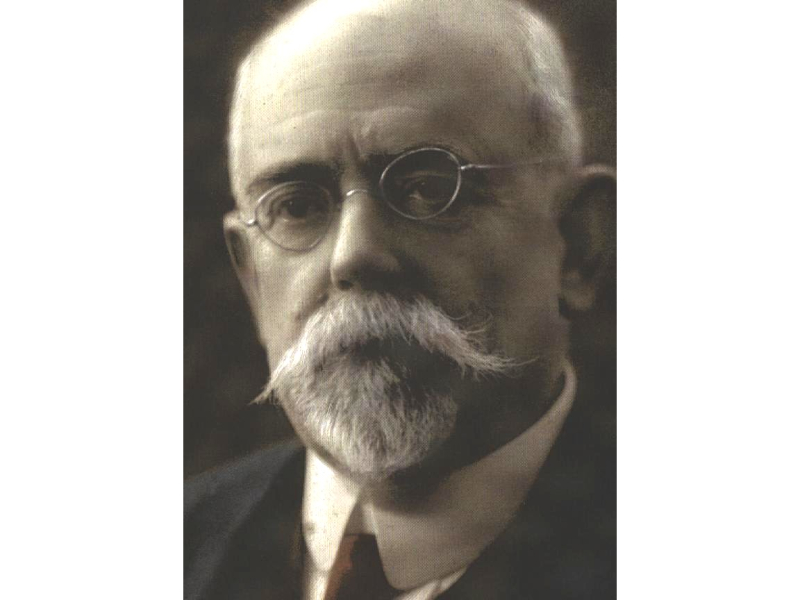

Geología Historica
La cronología geológica de la Península Valdés es extensa y variada. Transformando el mar en tierra, las rocas en canto rodado y la vida en fósil. Descubra y contemple, conservando el patrimonio.
El hombre de Valdés
Los pueblos originarios semi-nómades, el fracasado asentamiento español, los primeros colonos, la explotacíon de la salina, los pobladores y los turistas.
Todo es parte de la historia de la Península Valdés.
CARLOS AMEGHINO
Nació en Lujan, el 16 de junio de 1865 y desde 1887 se dedicó a explorar la Patagonia. Junto con su hermano, Florentino, formaron una dupla inquebrantable que forjaría las bases de la Paleontología Argentina. Fallecio en la ciudad de Buenos Aires, el 12 de abril de 1936.
